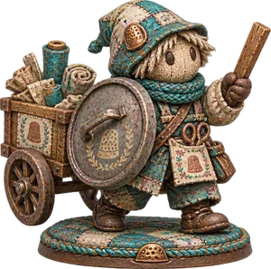
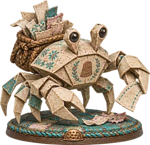

Знамя размером с ладонь
Карты и фигурки ведущего
Игровой комплект
3 игрока · 4 игрока · 5 игроков · 6 игроков · 7 игроков · 8 игроков
Карта кампании

Поля боя


Герои


Персонажи ведущего


Противники
 Ленточный сторож 1Ленточный сторож 4Ленточный сторож 2Ленточный сторож 5Ленточный сторож 3Ленточный сторож 6
Ленточный сторож 1Ленточный сторож 4Ленточный сторож 2Ленточный сторож 5Ленточный сторож 3Ленточный сторож 6

Тележечный спорщик 5Тележечный спорщик 3Тележечный спорщик 2Тележечный спорщик 4Тележечный спорщик 6Тележечный спорщик 1

Бумажный щипач 5Бумажный щипач 1Бумажный щипач 3Бумажный щипач 6Бумажный щипач 2Бумажный щипач 4